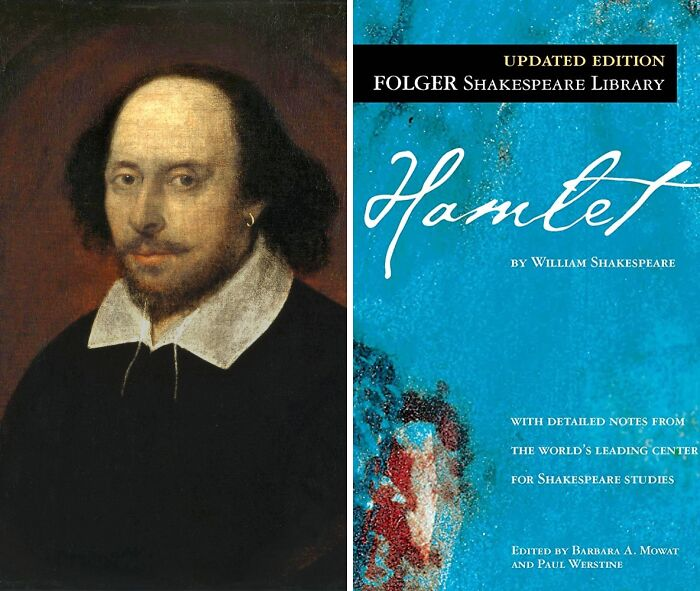

Charles Dickens 1812-1870
Charles Dickens was an extraordinary man. He is best known as a novelist but he was very much more than
that. He was as prominent in his other pursuits but they were not areas of life where we can still
see him today. We see him as the author of such classics as Oliver Twist, David Copperfield, Great
Expectations, A Tale of Two Cities, Bleak House and many others. All of his novels are English
classics.
Leo Tolstoy (1828-1910)
Count Lev Nikolayevich Tolstoy was a Russian novelist. There is a large degree of consensus that his two great novels,
War and Peace and Anna Karenina stand on the summit of realist fiction. He has been mentioned again and again as the
greatest novelist who ever wrote, and so he wins a place in this list of great writers. He is one of the two giants of
Russian literature. The other giant, Dostoyevsky, spoke of him as the greatest of all living novelists.
Lewis Carroll (Charles Lutwidge Dodgson) (1832-1898)
Lewis Carroll was an English academic, mathematician and Anglican deacon. He is best known for two books, Alice’s Adventures
in Wonderland and its sequel, Through the Looking-Glass. He is noted for his brilliant word play,
nonsensical logic and fantasy. He invented the genre of literary nonsense.The books are children’s books and very Victorian
in their nature. In modern times there are record bestselling children’s authors like J.C. Rowling
A BRIEF DESCRIPTION OF SOME BOOKS
Oliver Twist
Charles Dickens is most renowned for his novels, which explore the struggles of everyday life and the idea that you can change your life for the better
. Oliver Twist, probably his best-known literary work, is a somber tale of corruption, appalling living circumstances, and the fear of arbitrary bloodshed.
Dickens utilized satire and comedy to draw attention to these injustices and highlight how unkind and morally wrong the poor's existence was.
War And Peace
Russian novelist Count Lev Nikolayevich Tolstoy, commonly known as Leo Tolstoy in English, is recognized as one of the greatest writers ever.
Two books he wrote, War and Peace and Anna Karenina, are often regarded as the pinnacle of realism literature. Yet, War and Peace is seen to be Tolstoy's
crowning literary achievement. By including more human experience
than any previous work of fiction had ever tried, the book revolutionized the modern novel.
Hamlet

Sometime between 1599 and 1601, William Shakespeare, a man who needs no introduction, wrote his best play Hamlet, a tale of a prince bereaved by his father's
demise and his mother's all-too-soon remarriage to his uncle. Over 400 years later, given the plot's many appearances in films, television shows, and popular
music, Hamlet remains deeply and permanently ingrained in modern society.
Journey To The Centre Of The Earth
Jules Verne was a French poet, playwright, and novelist who has been called the "father of science fiction" and has had an incalculable influence on the
development of science fiction writing. His most notable fiction might be Journey To The Centre Of The Earth, which follows a professor
who discovers a document written by a 16th-century explorer claiming to have found a path to the Earth's core.
Alice’s Adventures In Wonderland
Lewis Carroll was an English author and poet known for his inventive wordplay, nonsensical logic, and imagination. His most well-known works are the
children’s books Alice’s Adventures in Wonderland (1865) and its sequel, Through the Looking-Glass (1871). Essentially, Alice’s Adventures in Wonderland
depicts the child’s struggle to survive in the confusing adult world.
The Stranger
Albert Camus, a novelist with a strong philosophical bent but not much of a philosopher (as he denied himself to be), is most known for his work and
examination of what he calls "the feeling of the absurd." One such work example is a literary classic of the 20th century, The Stranger. With the
story of an average guy who unknowingly gets embroiled in a senseless murder on a
sunny Algerian beach, Camus explored what he termed "the nakedness of man faced with the absurd."